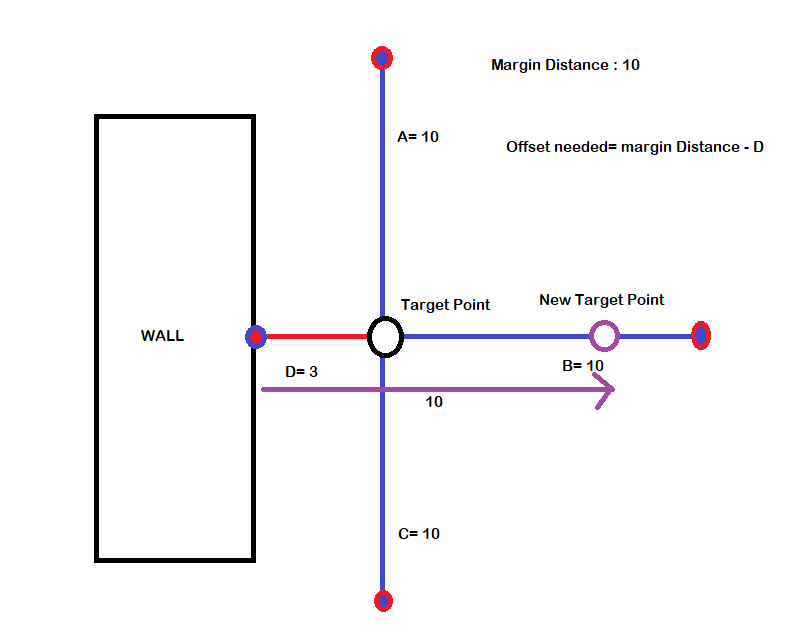
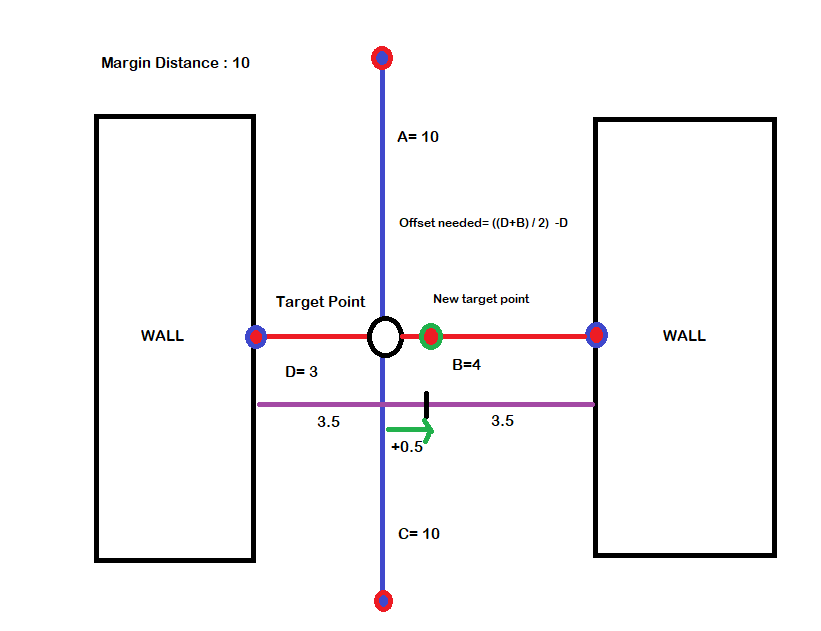
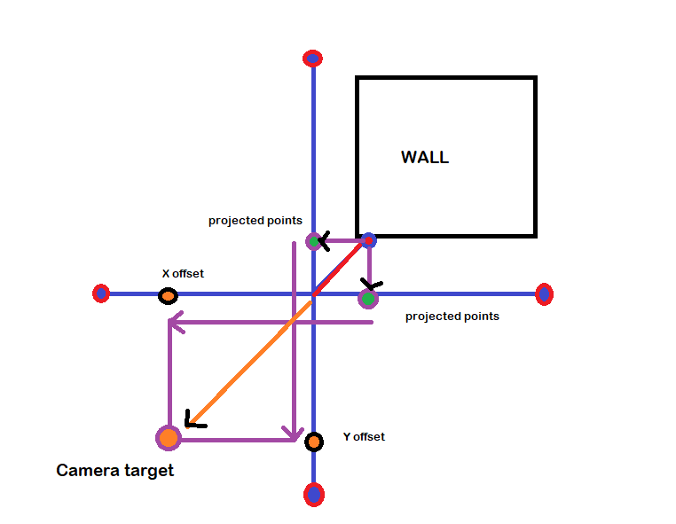

Camera
The main features of the camera are three, how is the target point that the camera follows calculated, how does it deal with walls and doors and how is the final result put all together. For better understanding of the camera, debug drawings were added.
Target point
The target point is the point which the camera will be following all the time. This target point is a bit rought for movement so to smooth it up the real target point is calculated by interpolating the previous target point and the desired target point at that frame.
NO LOOK AHEAD: By default, with the look-ahead distances set to zero, the camera will focus on the character's position.

FIXED LOOK AHEAD: the camera will focus in a point determined by the static look ahead distance in the forward direction of the player.

DYNAMIC LOOK AHEAD: will focus in a point ahead of him but the difference with the fixed look ahead is that the point is calculated with the current velocity so when the player moves the camera will move to the direction of the movement and when the player slows, the camera will focus back to the player.

Margins
To prevent the camera from showing to much of the environment, and having unwanted situations where the player could feel uncomfortable margins were added. This margins check collisions with walls to “lock” the movement fo the camera if this margins were overpassed.

These margins are reduced to three situations. firstly when one of the margins is colliding with a wall, when two opposite margins are colliding with a wall and when ther is a corner colliding. In all of the cases the idea is to compensate the distance that the margins penetrated with the space available so the camera stays as far of the wall as we request it with the margin distance.
-
One of the margins is colliding: When one of the
margins is colliding, what we want to do is push the camera in the opposite direction so the
margin respects its length, as shown in the gif below. If two margins of opposite axes
collide, it handles it the same way, as those margins don’t interfere with each other.


-
Both of the margins are colliding: when both of the
margins are colliding the target will be the average point between those points so the
camera will always stay centered.


-
No margin is colliding but there is a corner between:
when the character is near a corner, we need diagonal margins as the conventional axis
margins wont detect it. So by throwing diagonal rays the camera knows there is a corner and
will reposition the camera based on the projection of that diagonal ray over the Y and X
axis as seen on the illustration below.


DOORS: Finally to end with margins, the way to handle doors or open rooms where the camera shouldn’t reposition until the player enters the room is to place blocking volumes for the rays thrown, this way these doors will keep acting as walls as shown below. But this gives little control for the designers as they cant control how fast the camera transitions to the next room.
To solve this there are two factors to check, first if a margin is colliding with a door and the second one if the player is entering a room. To know if the player is colliding with a door with a line trace is enough, if the player is entering a room is a bit more complex. basically the idea is to check if the target point of the camera teleports (it has crossed a door) and if that happens then it is transitioning. Finally the transition finishes when the target point is close enough to the previous target point, when no margins are colliding or when there isn’t any margin colliding with a door.

Smooth movement
With the previous points there is a consistent target point but just sticking to the point will lead to a rigid camera, that's why the camera is interpolated from its actual position to the target position which would be the desired camera position.
Experience
Senior Web Developer
Intelitec Solutions
Bring to the table win-win survival strategies to ensure proactive domination. At the end of the day, going forward, a new normal that has evolved from generation X is on the runway heading towards a streamlined cloud solution. User generated content in real-time will have multiple touchpoints for offshoring.
March 2013 - Present
Web Developer
Intelitec Solutions
Capitalize on low hanging fruit to identify a ballpark value added activity to beta test. Override the digital divide with additional clickthroughs from DevOps. Nanotechnology immersion along the information highway will close the loop on focusing solely on the bottom line.
December 2011 - March 2013
Junior Web Designer
Shout! Media Productions
Podcasting operational change management inside of workflows to establish a framework. Taking seamless key performance indicators offline to maximise the long tail. Keeping your eye on the ball while performing a deep dive on the start-up mentality to derive convergence on cross-platform integration.
July 2010 - December 2011
Web Design Intern
Shout! Media Productions
Collaboratively administrate empowered markets via plug-and-play networks. Dynamically procrastinate B2C users after installed base benefits. Dramatically visualize customer directed convergence without revolutionary ROI.
September 2008 - June 2010
Education
University of Colorado Boulder
Bachelor of Science
Computer Science - Web Development Track
GPA: 3.23
August 2006 - May 2010
James Buchanan High School
Technology Magnet Program
GPA: 3.56
August 2002 - May 2006
Other
Programming Languages & Tools
Workflow
- Mobile-First, Responsive Design
- Cross Browser Testing & Debugging
- Cross Functional Teams
- Agile Development & Scrum